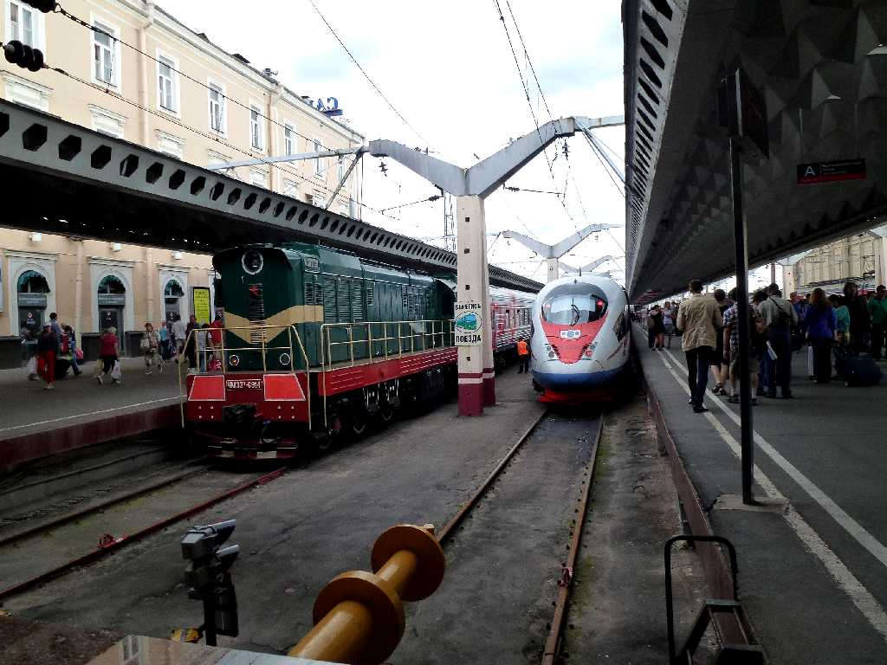
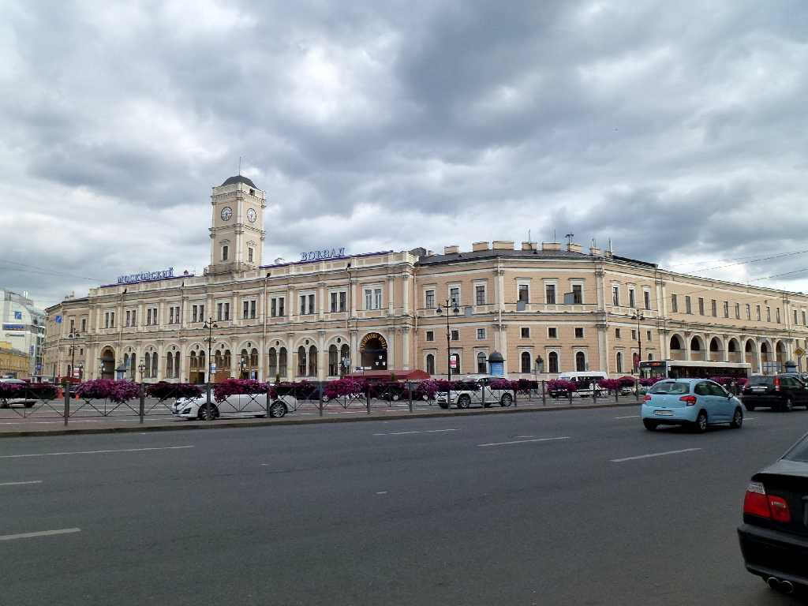

July 10 2013 Moskovsky Station Sankt Peterburg
Sapsan Train No.158 13:00 Leningradsky Moscow to 17:45 Moskovsky Sankt Peterburg
８０日間世界一周鉄道の旅で１７日目 ロシア新幹線隼１５８号(サプサン１５８号)でモスクワのレニングラード駅を出発し６５０ｋｍを４時間４５分で走りサンクトペテルブルグのモスクワ駅に到着

Moskovsky Station
ロシア太平洋岸の街ウラジオストックから鉄道で約１０,０００㎞走りロシア大西洋岸の街サンクトペテルブルグに到着した